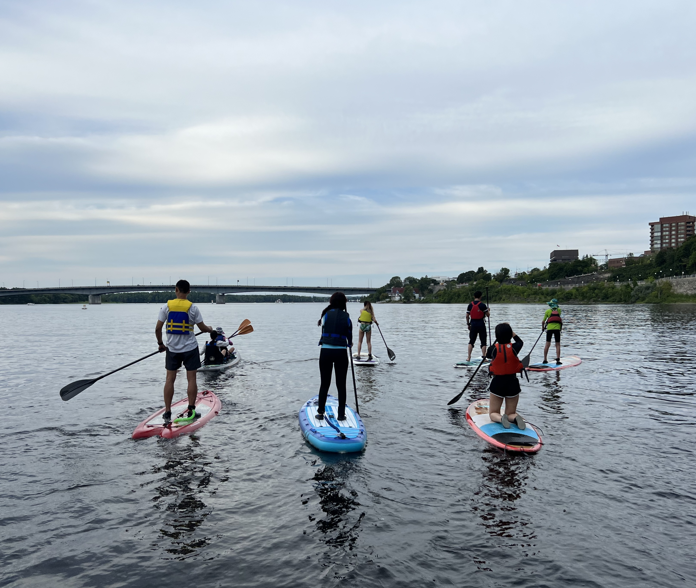
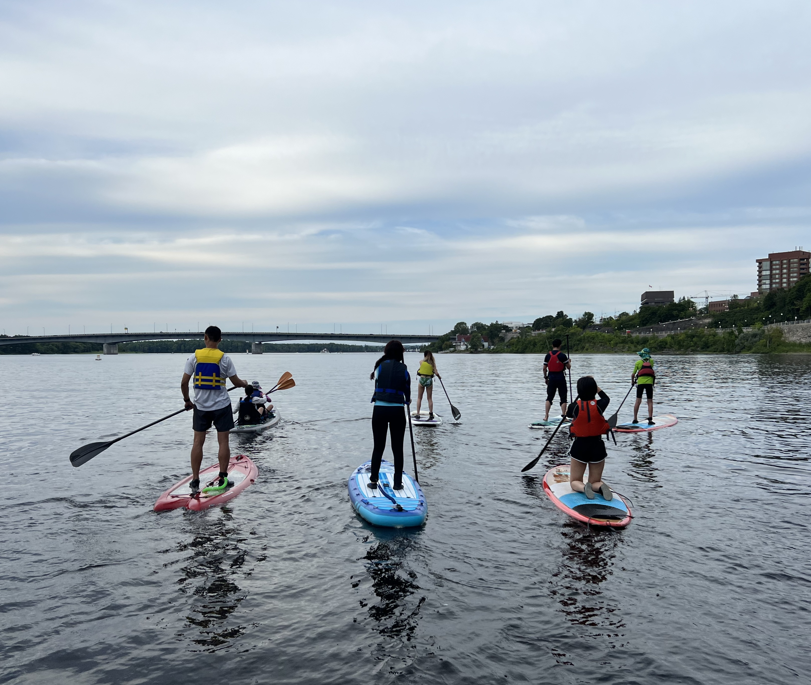

About Me
Jinyan Yao
Formerly a Registered Practical Nurse, I'm now a dedicated Computer Programming student at Algonquin College, passionate about crafting solutions with Java, SQL, and web technologies and thriving in dynamic, collaborative environments.
Experience
Exam Invigilator
Monitored exam sessions with strict attention to detail and adherence to institutional protocols, ensuring academic integrity and smooth operation.
Registered Practical Nurse
Coordinated patient services and appointments across departments and external specialists, streamlining communication and improving clinic efficiency.
Registered Practical Nurse
Delivered COVID-19 vaccinations to adults and children in a high-volume clinic, ensuring precise documentation and effective monitoring of adverse reactions.
Registered Practical Nurse
Monitored resident health and responded promptly to medical changes, supporting emergency interventions and chronic disease management.
Summer Program Assistant
Facilitated communication between visiting international students/teachers and local staff by providing English-Mandarin interpretation during campus activities.
Education
Computer Programming Diploma
Dean's Honour's List; GPA 4.0/4.0
Registered Practical Nurse Diploma
GPA 3.47/4.0
Bachelor's Degree in Forestry
Skills
Programming Languages
Java, SQL, PHP, HTML/CSS, JavaScript
Databases
PostgreSQL, MySQL, SQL Server
Tools & IDEs
Eclipse, Visual Studio, MySQL Workbench, Oracle SQL Developer
Operating Systems
Windows, Linux, MacOS
Web Development
HTML, CSS, JavaScript, PHP for building web pages and forms
Soft Skills
- Strong communication and teamwork skills
- Effective time management and problem-solving
- Experience working in multicultural teams
Languages
English, Mandarin (Fluent); French (Basic)
Interests
Outside of tech, I swap my laptop for ski boots or a paddle. As a ski instructor, I've learned how to keep cool under pressure (even when my students tumble!) and explain tricky skills in simple ways — skills that come in handy in programming, too. I'm also into paddleboarding, tennis, and pickleball, always chasing that perfect mix of focus and fun.
 

Certifications
- Registered Practical Nurse #BJ234239 | College of Nurses of Ontario
- Ski Instructor | Canadian Ski Instructors' Alliance
- Standard First Aid with CPR C & AED